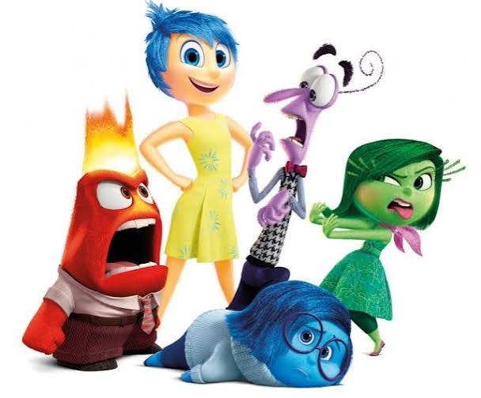

Problematica
El alto indice de ansiedad, depresion y riesgo de suicido en el estudiante, el cual se manifiesta en el bajo rendimiento academico y apatia generalizada hacia las actividades escolares y comunitarias.
En la actualidad, las comunidades educativas enfrentan directamente en la motivación, la convivencia y el progreso
académico académico de los estudiantes. Para respondera esta realidad, el PEC trabaja mediante el análisis constante del entorno escolar para
identificar necesidades prioritarias y diseñar estrategias de intervención oportuna que involucren a docentes, orientadores y familias.
